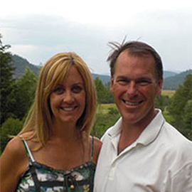
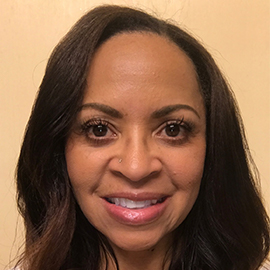
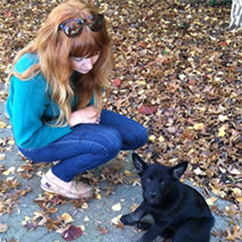
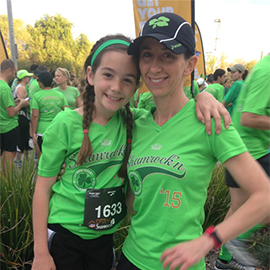

Meet the Team
-
CEO
We are currently hiring for the CEO position.
Mike Mattos, former executive with Regional Transit and Breathe California’s Board President-Elect, is temporarily acting on behalf of the Board of Directors to manage the CEO duties while we conduct our search. He can be contacted at mmattos@sacbreathe.org.
Inquiries regarding the open position can be sent to Jessica Mirabile at jmirabile@employers.org.
- 
-
Stacy Springer
Chief Operations Officer
(916) 444-5900 ext. 209
Stacy Springer has worked for philanthropic, non-profit agencies since 1993. A graduate from UC Davis with a major in English and an emphasis in Japanese, Stacy has worked as a teacher abroad, the Admissions Director for an international private school in Florida, and has organized fundraisers for the American River Parkway Foundation. Native to Sacramento, Stacy grew up enjoying the parkway and was thrilled to now have the opportunity to manage programs dedicated to preserving ‘Sacramento’s Jewel’. As many of her volunteers were parkway users, enjoying the outdoors for health reasons, Stacy developed an interest in the marriage between health and the environment. As a senior manager now at Breathe, and the coordinator for their largest annual fundraiser, the Breathe Bike Trek, Stacy continues to use her fundraising and program management skills to forward BREATHE’s philanthropic goal of clean air, healthy lungs, and tobacco free living.
-
Gi-Diep Nguyen
Controller
(916) 444-5900 ext. 203
Gi-Diep Nguyen has over 26 years’ experience in the accounting field, in both private and non-profit organizations. She holds a Bachelor’s degree from UC Berkeley in Applied Mathematics and Operation Research and received her MBA from Golden Gate University. In the 14 years with Breathe, she has been in charge of accounting and personnel functions. In addition, she assists the CEO in the process of budgeting and forecasting yearly income and expenses, internal grant auditing, and preparation for the yearly audit. Breathe has received excellent audit results every year since she has been with the agency.
- 
-
Kimberly Bankston-Lee
Senior Program Director
(916) 444-5900 ext. 211
Kimberly Bankston-Lee is a Senior Program Director. She has 20 years of experience planning, developing and implementing tobacco control programs, including conducting research. She is also managing the agency's Lung Health Programs (Asthma and Chronic Obstructive Pulmonary Diseases). She has a BS in Health and Safety Studies with an emphasis in Community Health from CSU, Sacramento and is a native of the Oakland Bay Area.
- 
-
Katie Cox
Senior Youth Programs Manager
(916) 444-5900 ext. 213
After graduating from Sonoma State with a degree in English Literature, Katie Cox realized her true passion was for public lands preservation, natural resource advocacy, and youth-based environmental education. Katie spent 2013-15 completing coursework in the Environment & Community graduate studies program at Humboldt State University. Her thesis research investigated barriers to increased participation in backcountry recreation and the environmental movement among communities of color. It was through this research project that she realized the extent that social and environmental justice issues are related to issues of public health. Secondarily, her work offers suggestions to increase the efficacy youth programming and curricula. If not in the office, you might find Katie with her German Shepard ‘Scout Finch’, hunting for agates, trekking through the wilderness, peak bagging or fly-fishing for steelhead on a remote river.
- 
-
Jenny Matchell
Program and Events Manager
(916) 444-5900 ext. 217
Jenny Matchell received a BS in Social Sciences with an emphasis in Environmental Sciences from California Polytechnic State University, San Luis Obispo. Working as a volunteer to rescue sick and injured marine animals at the Marine Mammal Center sparked her interest in the connection between people and the environment. She would go on to volunteer with other organizations in Hawaii and California that study the effects of tourism on marine mammal behavior. Since returning to Sacramento 10 years ago, Jenny has continued her connection with people and the environment on a different platform. As a special event planner and small business owner, Jenny has been able to combine her passion for putting on exemplary events with her love of the great outdoors and physical fitness. Jenny joined the Breathe team because preserving the air quality in this region is important to her as an avid runner and as a fourth generation Sacramento native.
-
Carol Maytum
Program Manager II
(916) 444-5900 ext. 206
Carol Maytum has worked in the public health arena for 25 years and joined the Breathe team in 2013. Before joining Breathe, Carol had been working as a Public Health Consultant managing her own firm for 15 years. She has assisted several Sacramento nonprofits to develop, maintain, and expand their capacity to deliver quality services in an effective and efficient manner. As Program Manager for the Sacramento Taking Action against Nicotine Dependence (STAND) Project, Carol works to improve the health and quality of life for students at local community colleges and universities. Carol earned her BS from Arizona State University and her Master of Public Health from UCLA. She is registered as a Fundraising Counselor with the California Office of the State Attorney General. She also volunteers with the Behavioral and Social Science Volunteer (BSSV) Program, an affiliate of the American Psychological Association.
-
Darin E. Reyes
Design Communications Associate
(916) 444-5900 ext. 212
Darin E. Reyes is a creative coder and visual designer with a BA in Design from UC Davis. Darin's work has been featured at the International Symposium on Electronic Art, Hong Kong Polytechnic University, the John Natsoulas Gallery, and the Crocker Art Museum. His work has received recognition from AIGA San Francisco and the UC Davis Undergraduate Research Center.